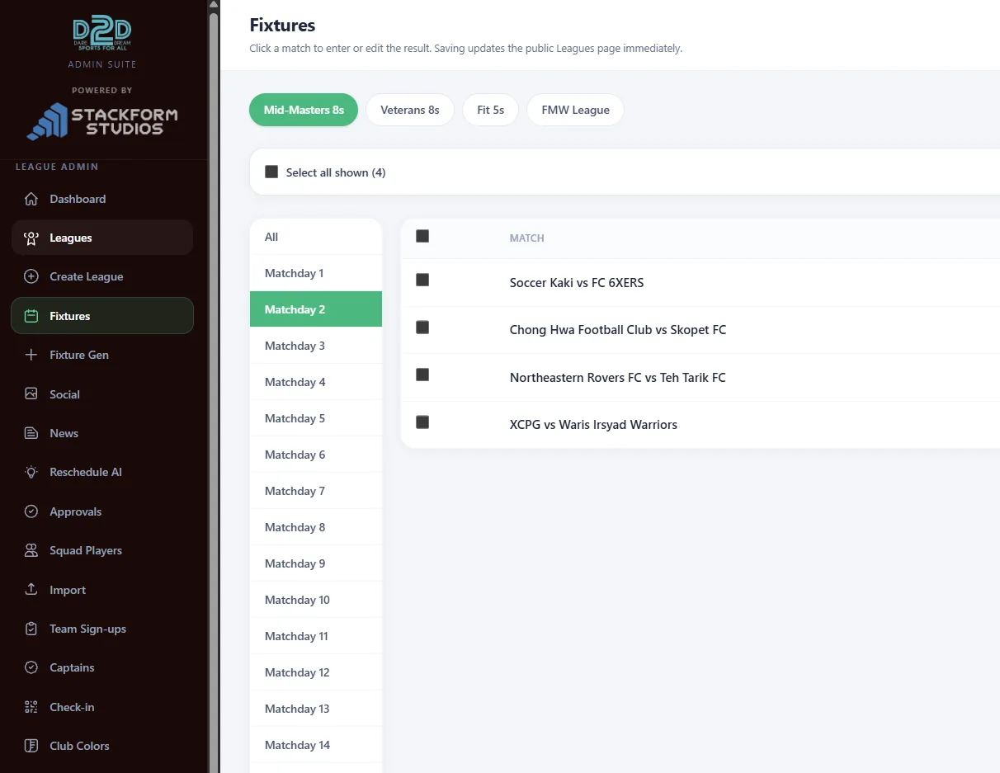

STACKFORM
STACKFORM
STACKFORM
STACKFORM
Not an agency taking briefs. Stackform sits inside your business, learns how it actually runs, and builds the custom software that runs it — web, systems, apps, automation. Then stays on.


Public platforms people actually use — fixtures, standings, team and player pages, kept live from real data.
Purpose-built systems for the way the operation actually works — not off-the-shelf tools bent out of shape.
Assignment, conflict checking, match sheets, payroll, per-league P&L — the back office, systematised.
Native apps that put the competition in every pocket — results, fixtures, notifications.
Enter data once; comms, social posts and reports generate themselves.
Sit inside the operation. Watch how match day, registration and payday actually happen — spreadsheets, threads and all.
Replace the manual work with software shaped to the operation — public site, admin, ops portal, app, automation.
Run it, evolve it, and keep removing the next bottleneck as the operation grows.
Stackform is one engineer — no account managers, no hand-offs. The person you talk to is the person who builds it, working alongside you.